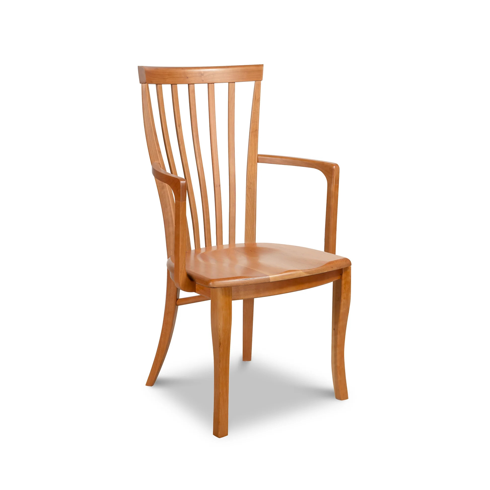

Is It a Chair? Cast your vote!
A rock in a park
A rock is clearly a natural chair created by erosion to offer rest to tired hikers.
A stack of books
Stacked books form an intellectual chair that nourishes the mind while supporting your body.

A sleeping cat
A cat is the perfect chair: self-heating, self-cleaning, and purrs when you sit on it.

A cactus
A cactus is a spiritual awakening chair that encourages you not to sit for too long. Perfect for productivity!
An old television
This retro TV is a multimedia chair that allows you to sit on the history of technology.
A chair (traditional)
Ironically, this conventional chair is so predictable that it might not be a real chair in the CoinChair universe.